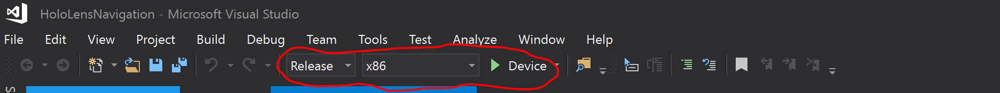

Microsoft Applied Robotics Research Library
Microsoft Applied Robotics Research Library
Open Source Samples for Service Robotics

Prerequisites, Installation and Build Instructions
Prerequisites
Ubuntu 18.04.5 LTS
Install v18 LTS from https://releases.ubuntu.com/18.04/.
Install XTerm
ROS Melodic
http://wiki.ros.org/melodic/Installation/Ubuntu.
Additional ROS packages required:
$ sudo apt-get install ros-melodic-driver-base
$ sudo apt-get install ros-melodic-move-base-msgs ros-melodic-octomap ros-melodic-octomap-msgs
$ sudo apt-get install ros-melodic-map-server
$ sudo apt-get install ros-melodic-camera-info-manager ros-melodic-camera-info-manager-py
$ sudo apt-get install ros-melodic-rgbd-launch
$ sudo apt-get install ros-melodic-husky-navigation
$ sudo apt-get install python-catkin-tools
Optional:
$ cd ~/catkin_ws/src/
$ git clone https://github.com/ros-teleop/teleop_twist_keyboard
$ cd ~/catkin_ws/
$ catkin_make
Ceres Solver
Install dependecies:
sudo apt-get install libgoogle-glog-dev
sudo apt-get install libatlas-base-dev
sudo apt-get install libeigen3-dev
Get Ceres Solver source code, build and install it:
$ mkdir -p ~/ceres
$ cd ~/ceres/
wget http://ceres-solver.org/ceres-solver-1.14.0.tar.gz
tar xvf ceres-solver-1.14.0.tar.gz
mkdir ceres-build && cd ceres-build
cmake ../ceres-solver-1.14.0
make -j3
sudo make install
Pepper
http://wiki.ros.org/pepper
$ sudo apt-get install ros-melodic-pepper-.*
$ sudo apt install ros-melodic-naoqi-bridge-msgs ros-melodic-naoqi-libqi ros-melodic-naoqi-driver ros-melodic-naoqi-libqicore
Download python SDK from https://developer.softbankrobotics.com/pepper-naoqi-25-downloads-linux.
Extract pynaoqi-python2.7-2.5.7.1-linux64.tar.gz to ~/nao
Add naoqi python pythonSDK path to .bashrc:
$ echo "export PYTHONPATH=${PYTHONPATH}:~/nao/pynaoqi-python2.7-2.5.7.1-linux64/lib/python2.7/site-packages" >> ~/.bashrc
Source packages:
$ cd ~/catkin_ws/src/
$ git clone https://github.com/ros-naoqi/naoqi_dcm_driver
$ git clone https://github.com/ros-naoqi/naoqi_bridge
$ git clone https://github.com/ros-naoqi/pepper_robot
$ cd ~/catkin_ws/
$ catkin_make
Disable audio in boot configuration file (set flag in line 85 from true to false):
$ sudo gedit /opt/ros/melodic/share/naoqi_driver/share/boot_config.json
Optional:
Install Choregraph.
If Choregraph fails to start, try:
sudo ln -sf /usr/lib/x86_64-linux-gnu/libz.so /opt/'Softbank Robotics'/'Choregraphe Suite 2.5'/lib/libz.so.1
Hololens Navigation Installation
Copy HoloROSBridge to ~/catkin_ws/src/HoloROSBridge
Copy HoloLens_Localization to ~/catkin_ws/src/HoloLens_Localization
Copy navigation_launcher to ~/catkin_ws/src/navigation_launcher
$ cd ~/catkin_ws/src/HoloLens_Localization/scripts
$ chown $USER:$USER dynamic_adjuster.py
$ chmod +x dynamic_adjuster.py
$ chown $USER:$USER localizer.py
$ chmod +x localizer.py
Build
$ cd ~/catkin_ws/
$ catkin_make
HoloLens Spatial Mapping application (Windows)
Enable development mode on HoloLens. Pair device with PC. Enable Device Portal.
Install Visual Studio 2019 with Universal Windows Platform build environment.
After loading the solution in Visual Studio for the first time, navigate to
Tools->NuGet Package Manager->Package Manager Console. If
you see a message "Some NuGet packages are missing from this solution...",
click on Restore to download and install the missing Eigen package.
At the time of development, v3.3.3 of Eigen was used for this solution.
For HoloLens generation 1: build with "Solution Configure:Release", "Solution Platform: x86"
For HoloLens generation 2: build with "Solution Configure:Release", "Solution Platform: ARM64"
If HoloLens device is connected via USB:

Deploy target: "Device"
If HoloLens is connected via WiFi, deploy target using Remote Machine settings.
Deploy information: https://docs.microsoft.com/en-us/windows/mixed-reality/develop/platform-capabilities-and-apis/using-visual-studio
After launching the application, you can air-tap to toggle between wirefreame and solid model render mode.